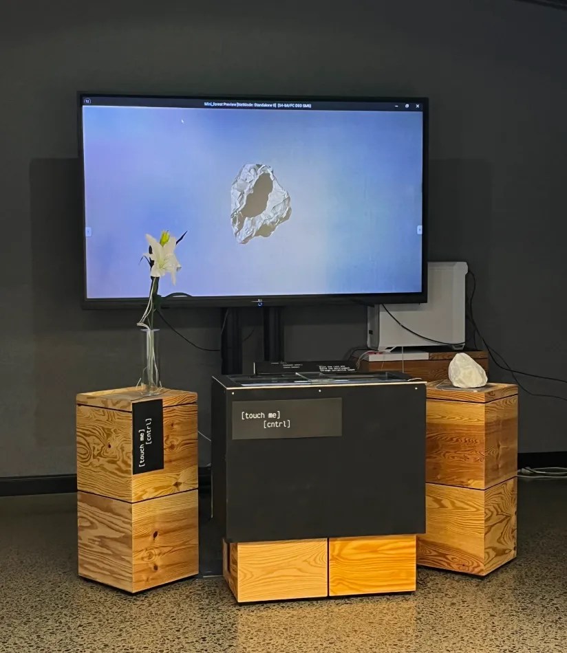
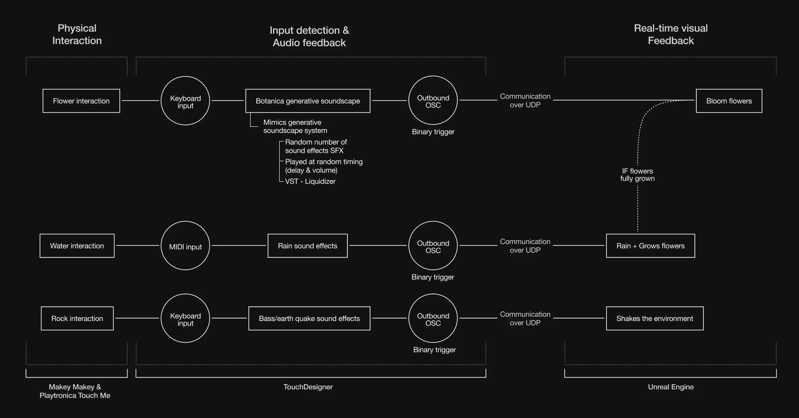
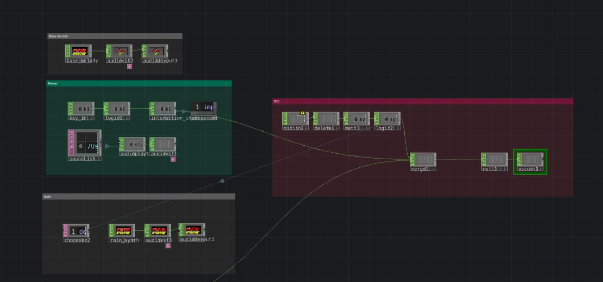
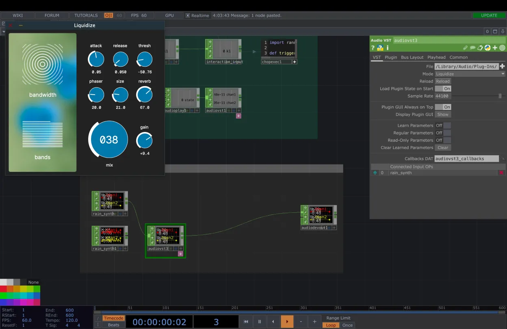
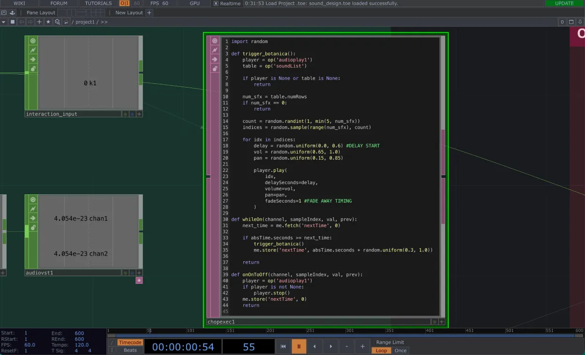
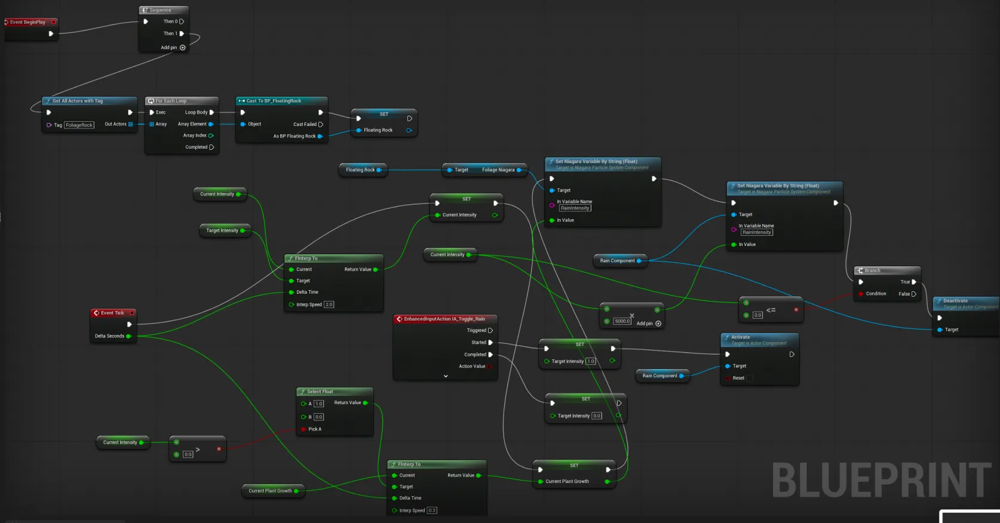

Lumiere
A multisensory installation that invites visitors to shape the environment through interactions to trigger audiovisual feedback. The tactile interactions encourage cooperation and slowed attention, reconnecting people with nature through senses.
ROLES
User Experience
Interaction Design
GROUP PROJECT
ACADEMIC
Living in a world that narrows our senses
The urban cities are built for optimisation — efficient, fast-paced, overstimulating.
As a result, we experience nature passively, restricting it to scenery, background or visual escape. Nature has become something to look at, capture, or selectively admire.
People do not reconnect by being told to care
Instruction or guilt does not reawaken the senses and admiration for nature, but through moments that invite them to slow down, notice, and physically engage.

Cooperation brings life to the space
In Lumiere, visitors touch flowers, water and rocks to trigger responsive audiovisual feedback. However, the environment only reaches its full state when strangers communicate and cooperate.
A multisensory installation that reawakens curiosity through dependent interactions
Lumiere borrows play as a gateway into care, giving permission to visitors to explore without pressure. By encouraging experimentation, curiosity, openness, the distant and unfamiliar ideas feel more approachable through direct sensory experience.
Rather than explaining the care, visitors are invited to discover through touch, sounds, movement and shared attention.
Through minimal guidance, Lumiere allows audiences to discover interdependence by feeling it.
Hyperrealistic digital environment of lilies growing on a rock for visually compelling tactile feedback

Real-time audiovisual feedback
TouchDesigner
TouchDesigner served two main roles within the system: responsive audio system and trigger communication with Unreal Engine.
Unreal Engine
The visual feedback was entirely built on Unreal Engine by the motion designer, Sam. The incoming OSC from TouchDesigner triggers each visual feedback.

Visitors' tactile touch was translated to data that feeds visual changes on Unreal Engine. As I had no knowledge about the software, I worked with Sam to use OSC as an on/off button for visuals to simplify the data.
Within TouchDesigner, the audio feedback was generated using preloaded sound effects and VSTs to manipulate the sounds.
After multiple trials of setting up a generative botanica soundscape system, I could not synthesise sound effects solely on TouchDesigner, hence preloaded sound effects SFX were used.


Random number of sound effects play at random time after delay and volume from the preloaded botanica library to mimic a generative system.
Rain triggered by MIDI input test

Unreal Engine responsive environment network